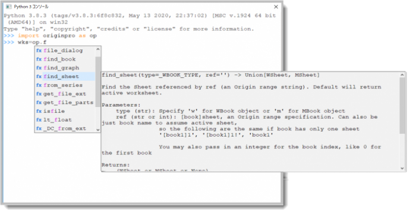
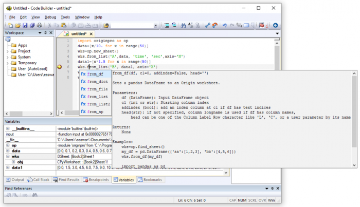

Pythonコードを実行
Running_Python_Code
以下のセクションでは、OriginでPythonコードを保存および実行する様々な方法を紹介します。
Pythonコンソールから
実行するPythonコードが数行しかない場合、Pythonコンソールが便利です。コンソールではインテリセンスがサポートされているため、originproパッケージで利用可能なオブジェクトとメソッドを調べるのに役立ちます。
Originの接続：Pythonコンソール...メニューを選択して、Pythonコンソールウィンドウを開きます。

コードビルダから
コードビルダを使ってPythonコードを開発できます。コードビルダでは、コードの強調表示、インテリセンス、デバッグがサポートされています。

Originの接続：utitled.pyを開く...メニューを選択して、コードビルダを開きます。コードを編集したら、F5キーを押してコードを実行できます。実行する前にコードをファイルに保存する必要もありません。コードビルダのツールメニューには、Pythonのために用意された次の3つのメニュー項目があります。
- Pythonパッケージ: パッケージのインストール、アップデート、アンインストール
- インテリセンス: インテリセンスを有効/無効にする
- Pythonコンパイルファイルをクリア: ユーザファイルフォルダのPYCファイルをクリア/削除
外部の .py ファイルから
.pyファイルに保存したコードは、スクリプトウィンドウなどのLabTalkスクリプトを実行可能なOrigin内のどこからでも、Runコマンドを使って実行できます。
// ユーザファイルフォルダに保存されたtest.pyファイルのコードを実行
run -pyf test.py;
// 指定したフォルダに保存されたファイルのコードを実行
string str$ = "C:\temp\test.py";
run -pyf %(str$);
LabTalkスクリプトからPythonコードに変数を渡すことができます。次のように操作してみましょう。
- Originのメニューから接続 > untitled.pyを開く...を選択します。
- コードビルダの右側にuntitled.pyタブが開きます。以下のPythonコードを貼り付けます。
import sys
if __name__ == '__main__':
print(len(sys.argv))
print(sys.argv[1])
print(sys.argv[2])
- コードビルダのファイル：名前を付けて保存を選択して、デフォルトのフォルダ（ユーザファイルフォルダ）にtest.pyという名前で保存します。
- Originに戻り、メインメニューのウィンドウ：スクリプトウィンドウを選択してスクリプトウィンドウを開きます。そして、以下のLabTalkスクリプト行を貼り付けます。
double var1 = 123.456;
string var2$ = 'hello';
run -pyf test.py "$(var1)" "%(var2$)";
- マウスでドラッグして、スクリプトコードの3行とも選択し、Enterキーを押して実行します。
- 出力として以下が表示されるはずです。
3
123.456
'hello'
プロジェクトに添付された .py ファイルから
Pythonコードを含む.pyファイルは、Originプロジェクトに添付できます。添付すると、以下のスクリプトコマンドを使ってコードを実行できます。
// プロジェクトに添付されたtest.pyファイルのPythonコードを実行
run -pyp test.py;
// 拡張子.pyは省略可
run -pyp test;
ファイルを作成してプロジェクトに添付するには、以下のように操作します。
- コードビルダでPythonコードを編集して、ファイル名を付けて保存します。
- コードビルダメニューの、ファイル：ワークスペースに追加を選択します。すると左パネルのワークスペースツリーのUserの位置に表示されます。
- ワークスペースツリーのUserの項目からProjectにファイルをドラッグ&ドロップで移動します。
- これでファイルがプロジェクトに添付されます。
- プロジェクトの項目にあるこのエントリをダブルクリックして、右側の新しいタブにコードを開けば編集可能です。
- Originに戻り、プロジェクトを保存します。これでコードファイルはプロジェクトに添付され、Origin内のLabTalkスクリプトがサポートされている場所ならどこからでもコードを実行できます。
テキストオブジェクトから
Pythonコードは、グラフ、ワークシート、行列にあるテキストオブジェクトに保存できます。このコードは、ボタンなどのほかのオブジェクトからrunコマンドを使って実行できます。
// テキストオブジェクト 'pycode' に保存されたPythonコードを実行
run -pyb pycode;
次のように操作してみましょう。
- Originのメインメニューで、ファイル：新規作成：ワークブック...を選択します。
- 開いた新しいワークブックダイアログで、テンプレート名Lomb-Scargle Periodogramを選択し、OKボタンをクリックしてOriginにテンプレートを開きます。
- ALTキーを押しながら、ピリオドグラムの計算というボタンをダブルクリックします。テキストオブジェクトダイアログのプログラミングタブが開き、以下のLabTalkスクリプトコードが確認できます。
pip -check scipy pandas;
run -pyb pycode;
- 最初の行ではLabTalkのpipコマンドを使って、このサンプルに必要なパッケージである、scipyとpandasの有無を確認してインストールします。2行目では、pycodeという名前のテキストラベルに保存されているPythonコードを呼び出します。ダイアログを閉じます。
- 次に、Pythonコードボタンを右クリックして、ショートカットメニューからプロパティを選択します。
- テキストオブジェクトダイアログで、プログラミングタブを開きます。名前がpycodeに設定されており、先ほどのボタンに設定されたスクリプトが参照するオブジェクトであることがわかります。編集ボックスでには、Pythonコードが入力されていることがわかります。ダイアログを閉じます。
- ワークシートのピリオドグラムの計算ボタンをクリックします。Pythonコードが実行されて、ワークシートのC、D列に結果が出力され、グラフも更新されて曲線が表示されます。
Python関数を呼び出す
Pythonコードの代わりにPython関数を定義すると、列の式やインポートウィザード、フィット関数などのOriginの機能から呼び出すことができます。